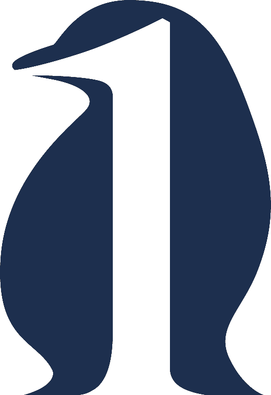

퍼스트펭귄
관리자 - 문제별 통계
📊 문제별 통계 분석
모든 사용자의 문제별 정답률 및 답안 선택 분포를 확인할 수 있습니다.
연도
전체
2025년
2024년
2023년
2022년
2021년
2020년
2019년
과목
전체
운동생리학
건강체력평가
운동처방론
운동부하검사
운동상해
기능해부학
병태생리학
스포츠심리학
난이도
전체
어려움 (정답률 50% 미만)
보통 (정답률 50-79.9%)
쉬움 (정답률 80% 이상)
문제 유형
일반 문제
모의고사
전체 (통합)
정렬
문제 번호 순
난이도 순 (어려운 순)
완주 세션만 집계
일반 20문제·모의고사 80문제 기준
통계 조회
📥 엑셀 다운로드 (.xlsx)
요약 통계
통계를 조회해주세요.
문제별 상세 통계
통계를 조회해주세요.